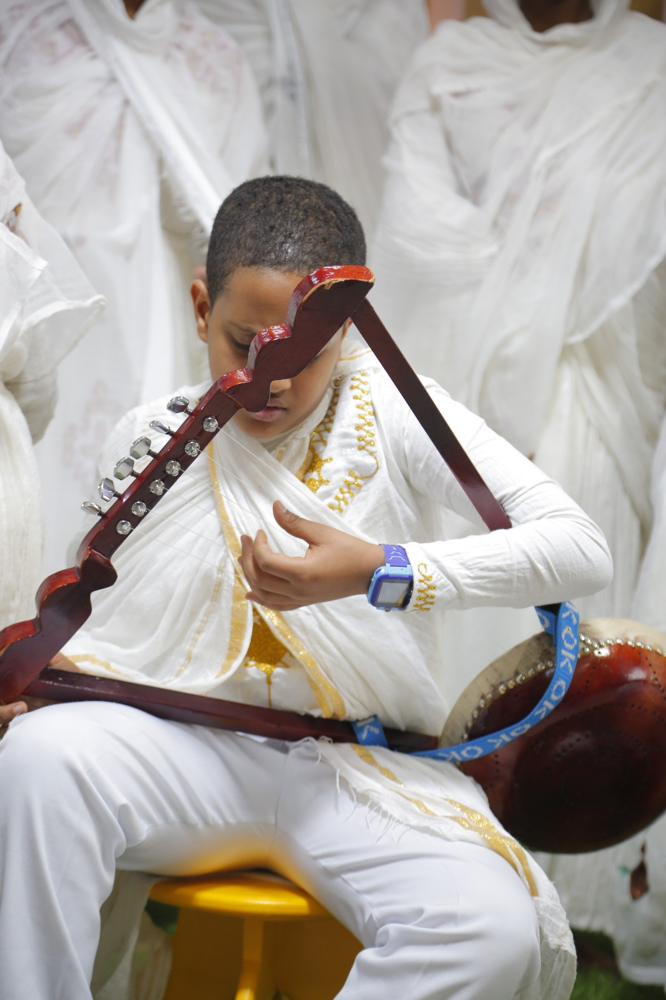
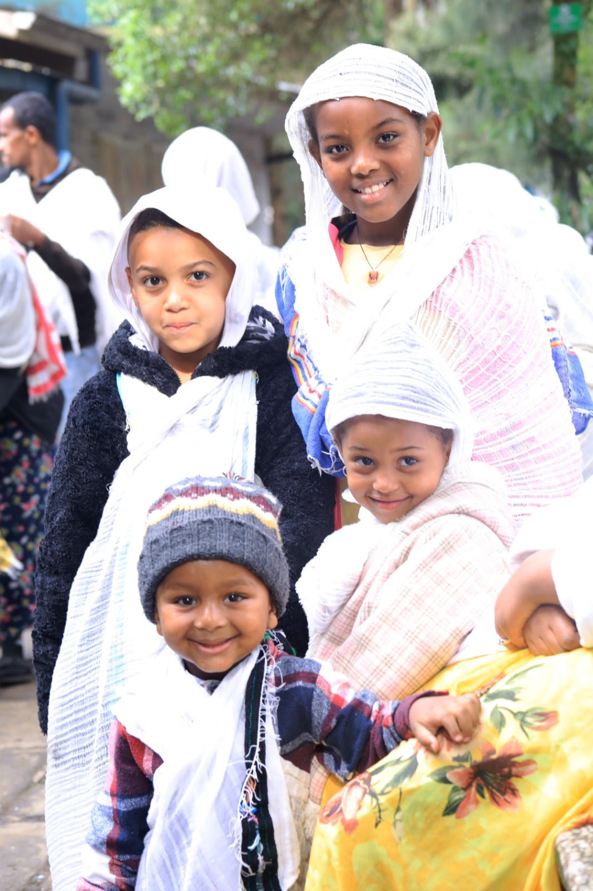

A Holy Beginningቅዱስ መጀመሪያ
Baptism is not only a date to calculate. It is a life to nurture.ጥምቀት የሚቆጠር ቀን ብቻ አይደለም። የሚንከባከበው ሕይወት ነው።
Use the calculator, then mark the anniversary with prayer, giving, teaching, and gratitude.ማስያውን ይጠቀሙ፣ ከዚያም ዓመታዊውን ቀን በጸሎት፣ በመስጠት፣ በትምህርትና በምስጋና ያስቡ።
"Boys are baptised on the 40th day, girls on the 80th — following the purification laws of Leviticus and the dedication of the Lord in the Temple." "ወንዶች ልጆች በ40ኛው ቀን፣ ሴቶች ልጆች በ80ኛው ቀን ይጠመቃሉ — የሌዋውያንን የንጽሕና ሕግ እና የጌታን ቤተ ክርስቲያን ውስጥ ማቅረቡን ተከትሎ።"Leviticus 12 • Luke 2:22ሌዋውያን 12 • ሉቃስ 2፡22
Enter the child's birthdate (Gregorian). The birth date counts as Day 1. The calculator finds Day 40 for a boy and Day 80 for a girl, then shows the baptism date in both calendars.የልጁን/የልጅቷን የጎርጎርዮሳዊ የልደት ቀን ያስገቡ። የልደት ቀን ቀን 1 ነው። ለወንድ 40ኛ ቀን፣ ለሴት 80ኛ ቀን ያሳያል።
- Boy: Day 40 from birth (birth = Day 1)ወንድ፡ ከልደት 40ኛ ቀን (ልደት = ቀን 1)
- Girl: Day 80 from birth (birth = Day 1)ሴት፡ ከልደት 80ኛ ቀን (ልደት = ቀን 1)
How to celebrate a baptism dayየጥምቀት ቀንን እንዴት እናክብር
A birthday centers on receiving gifts. A baptism day is a yearly tradition of giving in honor of spiritual rebirth.የልደት ቀን ብዙ ጊዜ ስጦታ መቀበል ላይ ያተኩራል። የጥምቀት ቀን ግን ዓመታዊ የመስጠት ወግ ነው።
Feed the poorድሆችን ምግብ አቅርቡ
Prepare food packages for families in need, orphans, or elders as an act of gratitude for the child's spiritual birth.ለድሃ ቤተሰቦች፣ ለወላጅ አልባ ልጆች ወይም ለአረጋውያን ምግብ ማዘጋጀት — ለልጁ/ልጅቷ መንፈሳዊ ልደት ምስጋና።
Give to the Churchለቤተ ክርስቲያን ስጡ
Support your parish, Sunday School, or a spiritual education project like Lejochachen on the baptism day.የጥምቀት ቀን ቤተ ክርስቲያናችሁን፣ ሰንበት ትምህርት ቤቱን ወይም ልጆቻችን ያለ ፕሮጀክት ይደግፉ።
Attend Liturgyቅዳሴ ይሳተፉ
Attend the Qidase, light a candle, and pray for the child and for those who are suffering on the baptism anniversary.ቅዳሴ ይሳተፉ፣ ሻማ ያብሩ፣ ለልጁ/ልጅቷ እና ለሚሰቃዩ ሰዎች ይጸልዩ።



Interactive Spiritual Roadmapዕድሜ-ተኮር የመንፈሳዊ ምስረታ ካርታ
Four stages of faith formation and identity.ቃለ ኪዳን ምስረታ አራት ደረጃዎች።
From baptism day forward, each stage of childhood calls for different engagement. Explore the roadmap for your child's current stage.ከጥምቀት ቀን ጀምሮ፣ የልጅነት እያንዳንዱ ደረጃ የተለየ ሕብረት ይፈልጋል። ለልጅዎ ወቅታዊ ደረጃ ካርታውን ያስሱ።
Sensory alignment and memory anchoring.ስሜታዊ ትስስርና የትዝታ መቀረጽ።
At this stage, children absorb the sights, sounds, and rhythms of faith before they can articulate them. The goal is to anchor the Ethiopian Orthodox Tewahedo Church (EOTC) tradition in the child's earliest memories.በዚህ ደረጃ ልጆች ምስሉን፣ ድምፁን፣ እና ሪትሙን ከእምነት ጋር ይሰምራሉ። ዓላማው ቀደምት ትዝታቸው ውስጥ EOTC ወጉን ማቀረቅ ነው።
Candle-Lighting Ritualሻማ ማብሪያ ሥርዓት
Establish a weekly candle-lighting rhythm tied to feast days or Sunday worship. Let the child hold the candle under supervision — the warmth and light create lasting sensory memory.ከዓላት ወይም ከሰንበት አምልኮ ጋር ተያይዞ ሳምንታዊ ሻማ ማብሪያ ሥርዓት ይጀምሩ። ልጁ/ልጅቷ ሻማ ይዞ ይምራ — ሙቀቱና ብርሃኑ ዘላቂ ስሜታዊ ትዝታ ይፈጥራሉ።
Background Hymn Streamingየዜማ ዳራ አዳምጦ
Play traditional EOTC hymns — mezmur, qine, and feast-day songs — as ambient audio during family meals, play, and sleep. Visit the Resources page for our curated hymn playlist.ቤተሰባዊ ምግብ፣ ጨዋታ እና እንቅልፍ ወቅት ባህላዊ EOTC መዝሙሮችን — መዝሙር፣ ቅኔ — አዳምጡ። ለሙዚቃ ዝርዝር ሀብቶች ገጽ ይጎብኙ።
Baptismal Media & Photo Archiveየጥምቀት ፎቶና ሚዲያ ማኅደር
Create a dedicated album of the child's baptism day — photos, certificate scans, and short videos. Revisit these annually on the baptism anniversary as a family act of gratitude.የልጁ/ልጅቷ የጥምቀት ቀን ወደ ልዩ አልበም ያሰባስቡ — ፎቶዎች፣ ሰርቲፊኬት ቅኝቶች፣ አጭር ቪዲዮዎች። ዓመታዊ ምስጋና ሥርዓት ሆኖ ይቀጥል።
Narrative engagement and primary semantic learning.ትረካ ትስስርና መሠረታዊ ትርጓሜ ትምህርት።
Children begin asking "why" and "who." Connect the Ethiopian Orthodox Tewahedo Church (EOTC) stories to their daily questions — the saints become friends, the feasts become celebrations they anticipate.ልጆቹ "ለምን" እና "ማን" ይጀምራሉ። EOTC ታሪኮችን ከዕለታዊ ጥያቄዎቻቸው ጋር ያሳዩ — ቅዱሳን ጓደኞቻቸው ይሆናሉ፣ ዓላት ሲጠባበቋቸው ይሆናሉ።
Spiritual Name Meaningየሥም መንፈሳዊ ትርጓሜ
Teach the child the full story of the saint or theological concept behind their spiritual (baptismal) name. Who was this saint? What did they sacrifice? How does the name shape who you're called to be?ልጁ/ልጅቷ ለጥምቀት ስማቸው ጀርባ ያለውን ቅዱስ ወይም ሥነ-መለኮታዊ ትርጓሜ ሙሉ ታሪክ ያስተምሩ። ቅዱሱ ማን ነው? ምን ጀመሩ? ስሙ ማነት ወደ ምን ይጠራዎት?
Build a Paper "Covenant Crown"የወረቀት "ቃል ኪዳን ዘውድ" ሥሩ
A hands-on craft: help the child design and assemble a paper crown representing their covenant with God through baptism. Each segment of the crown can name one virtue, one feast, or one saint associated with their name. Frame it and display it.ማድረጊያ ሥራ: ልጁ/ልጅቷ ከጥምቀት ጋር ያለ ቃል ኪዳናቸውን የሚወክል የወረቀት ዘውድ ያቅዱ። የዘውዱ እያንዳንዱ ክፍል አንድ ፈሪሐ፣ አንድ ዓል፣ ወይም ስማቸው ጋር ቅዱስ ሊሰይም ይችላል። ፍሬም አድርገው ያስቀምጡ።
Stories from the Synaxariumከስነ-ጽሐፈ ቅዱሳን ታሪኮች
Read age-appropriate synaxarium (Senkesar) stories once a week together. Connect each saint's story to a modern scenario the child recognizes — courage, kindness, honesty, faith under pressure.ሳምንት አንድ ጊዜ ዕድሜ-ተኮር ስነ-ጽሐፈ ቅዱሳን ታሪኮችን አብረው ያንብቡ። ጀግንነት፣ ደግነት፣ ታማኝነት — ቅዱሱ ታሪክ ልጁ/ልጅቷ ከሚያውቃቸው ዘመናዊ ሁኔታዎች ጋር ያዛምዱ።
Behavioral shifts from receiving to proactive giving.ከመቀበል ወደ ንቁ መስጠት ያለ የባህሪ ለውጥ።
The child can now take active roles in the family's faith life. This stage builds responsibility, generosity, and direct engagement with the Ethiopian Orthodox Tewahedo Church (EOTC) community.ልጁ/ልጅቷ አሁን ቤተሰቡ የእምነት ሕይወት ውስጥ ንቁ ሚና መጫወት ይችላሉ። ይህ ደረጃ ኃላፊነትን፣ ልግስናን እና EOTC ማኅበረሰብ ጋር ቀጥተኛ ትስስርን ይገነባል።
Scripture Reading Trackerየቅዱስ ጽሑፍ ንባብ መከታተያ
Create a monthly reading checklist: Psalms, Gospel passages, and feast-day epistles. Each completed reading is marked. Review together at month's end and discuss what resonated. A simple notebook works well.ወርሃዊ ዝርዝር ያዘጋጁ: መዝሙር፣ ወንጌል፣ የዓላት ኤፊስጦሳ። ሙሉ ንባብ ምልክት ያድርጉ። ወርሃ መጨረሻ አብረው ይቃኙ። ቀላል ደብተር ጥሩ ነው።
Community Outreach Checkpointየማኅበረሰብ አገልግሎት ምልክት
Quarterly acts of giving: prepare food for families in need, visit an elder, or donate to the Sunday School. Track each act and discuss its spiritual significance afterward.ሩብ ዓመታዊ የምጽዋት ድርጊቶች: ለቤተሰቦች ምግብ ማዘጋጀት፣ አረጋዊን መጎብኘት፣ ለሰንበት ትምህርት ቤት መስጠት። ድርጊቶቹን ይከታተሉ።
Godparent Engagement Checkpointየሰምዕ ወላጅ ቅርብ ሁኔታ
Set a bi-annual checkpoint where the child personally contacts their spiritual godparents (Semae Wolaj) — by phone, letter, or in person. This reinforces the covenantal relationship established at baptism.ልጁ/ልጅቷ ራሱ/ራሷ ሰምዕ ወላጆቻቸውን — ስልክ፣ ደብዳቤ፣ ወይም ሰው በሰው — በዓመት ሁለቴ ያነጋግሩ። ይህ ከጥምቀት ቃል ኪዳን ጋር ቁርኝቱን ያጠናክራል።
Personal commitment and navigating peer dynamics.ፍርዶት ቁርጠኝነት እና ማህበራዊ ፈተናዎችን መሸናፍ።
The adolescent now encounters peer pressure, identity questions, and external social systems that may conflict with their Ethiopian Orthodox Tewahedo Church (EOTC) formation. This stage provides structured tools for covenant renewal and resilience.ወጣቱ አሁን የእኩዮቹ ተጽዕኖ፣ የማንነት ጥያቄዎች፣ EOTC ምስረታቸው ጋር ሊጋጩ የሚችሉ ውጫዊ ሥርዓቶች ያጋጥሙታሉ/ታሉ። ይህ ደረጃ ቃል ኪዳን ለማደስ ሥርዓታዊ መሳሪያዎችን ያቀርባል።
Holy Communion Scheduling Toolቅዱስ ቁርባን ሰሌዳ
Work with the adolescent to plan Holy Communion (Qurban) attendance aligned with the EOTC calendar — fasting periods, feast days, and major liturgical seasons. A printed monthly calendar with marked dates builds intentional practice.ቅዱስ ቁርባን (ቁርቤ) — ጾምና ፍስሓ — ሳምንታዊ ሰሌዳ አብረው ያቅዱ። ምልክት የተደረጉ ቀናት ያሉት ወርሃዊ ካሌንደር ሆን ብሎ ልምምድ ይሠራሉ።
Family Dialogue Templatesየቤተሰብ ውይይት ማዕቀፎች
Structured conversations for families navigating topics like: peer pressure on fasting and faith practices, questions about identity in a diaspora context, social events that conflict with liturgical obligations. These dialogues are meant to be honest, non-judgmental, and theologically grounded.ስለ ጾምና እምነት ልምምድ ሲደርስ የእኩዮቹ ተጽዕኖ፣ ዲያስፖራ ማንነት ጥያቄዎች፣ ሥርዓተ አምልኮ ጋር የሚጋጩ ማህበራዊ ዝግጅቶች ያሉ ቤተሰቦች ለሚነጋገሩ ሥርዓታዊ ውይይቶች።
Theological Text Resourcesሥነ-መለኮታዊ ጽሑፍ ሀብቶች
Introduce age-appropriate EOTC theological texts: the Fetha Negest, Haymanot Abew, select Anaphoras. Begin with the "why" — why does EOTC believe what it believes, and how does it differ from other traditions? Deep understanding builds resilient faith.ዕድሜ-ተኮር EOTC ሥነ-መለኮታዊ ጽሑፎችን ያስተምሩ: ፍትሐ ነገሥት፣ ሃይማኖት አበው፣ ምርጥ አናፎራዎች። "ለምን" ከሚለው ይጀምሩ — EOTC ለምን ያምናል? ሌሎች ወጎች ከምን ይለያል?